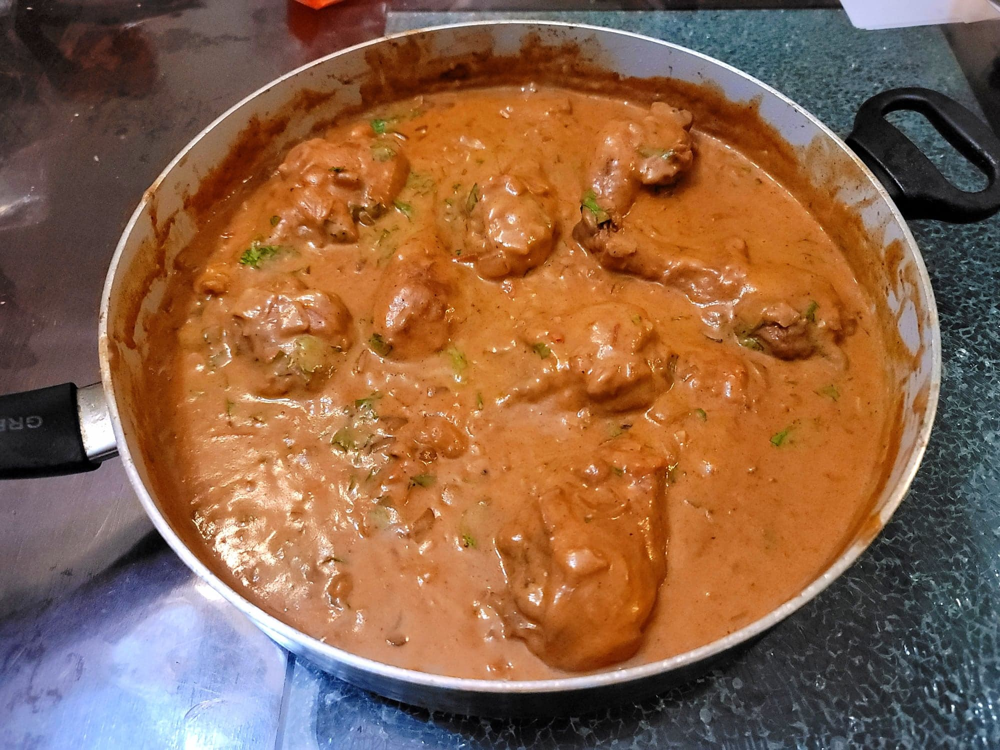

Chicken Paprikash

Ingredients:
- 3 lb Chicken legs
- 2 tbsp Lard
- 2 Yellow onions, diced
- 2 cloves Garlic, minced
- 2 Roma tomatoes, finely diced
- Optional: 1 Red bell pepper, diced
- 4 tbsp Paprika
- 1/2 tbsp Salt
- 1/2 tsp Black pepper
- 2 cups Chicken broth
- 3 tbsp Flour
- 3/4 cup Sour cream, room temperature
- 1/4 cup Heavy cream
- 2-4 tbsp Parsley, chopped
Instructions:
- Heat the lard in a very large pan over medium heat. Add the chicken legs and brown on all sides. Then remove the chicken from the pan and reserve.
- Add in the onions and sauté until translucent, about 5-7 minutes. Then add in the garlic, tomatoes, and bell pepper. Sauté for another 2-3 minutes.
- Remove from the heat and stir in the paprika, salt, and pepper. Add back in the chicken and then stir in the chicken broth and return to the heat. Bring to a boil and then cover and reduce to medium-low. Let cook for about 40 minutes.
- Remove the chicken from the pan again. In a separate bowl, whisk together the sour cream, heavy cream, flour, and about 1/4 cup of the sauce from the pan. Then transfer the contents of the bowl into the pan while whisking the pan constantly. Whisk until homogenous and then bring to a simmer for about 2-3 minutes. Taste and adjust for seasonings and return the chicken to the pan. Let the chicken heat through.
- Garnish with parsley and serve immediately with spaetzle.